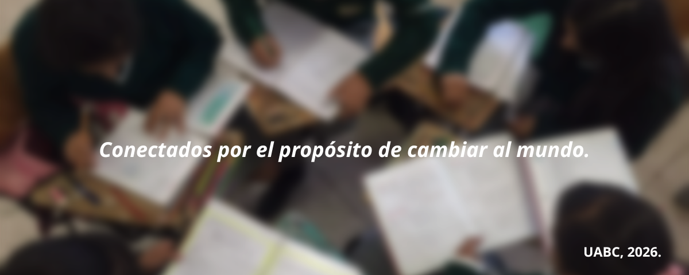
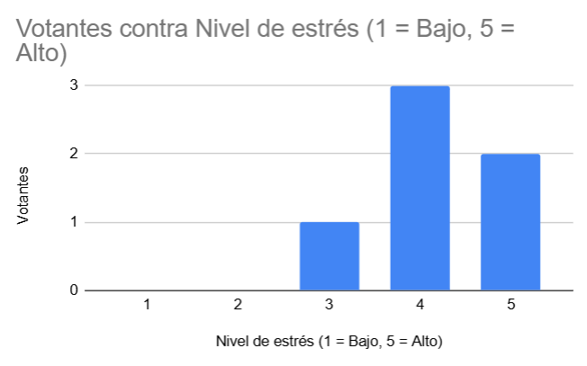
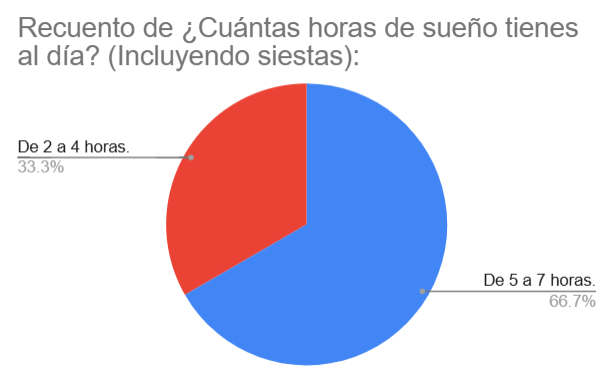
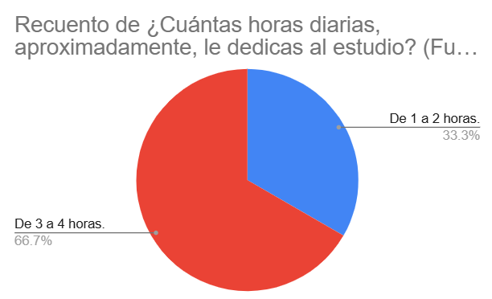
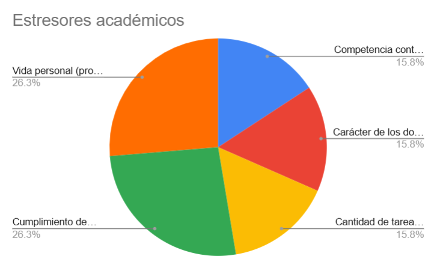

El Problema
Las académicas mexicanas, Claudia Toribio y Silvia Franco (2016), describen al estrés académico como un «proceso psicológico sistemático adaptativo que ocurre en entornos de aprendizaje cuando los estudiantes enfrentan desafíos y los perciben como estresantes».
Este estrés ocurre cuando el alumno se ve sometido a una serie de demandas que, bajo su propia valoración, son consideradas estresores. Entre los detonantes se pueden incluir exámenes, entregas de proyectos o la carga de créditos académicos.


Datos
Con el propósito de probar la existencia de este problema en nuestra realidad, hace poco se llevó a cabo una encuesta dentro del campus a alrededor de 6 alumnos pertenecientes a distintas facultades, respecto a sus horas de sueño, de estudio y, sobretodo, sus niveles de estrés
La mayoría de los estudiantes votó por contar con un nivel de estrés mayor de 3, en una escala donde el límite más alto es 5. Esto por sí solo resulta bastante preocupante, revisemos el resto de resultados de la encuesta:

Horas de sueño diarias
La pregunta sobre cuántas horas de sueño tienen los estudiantes al día (contando siestas por la tarde) capturó los siguientes resultados, donde podemos ver que una cantidad considerable no mantiene un hábito de sueño saludable.

Horas de estudio diarias
Por otra parte, nos podemos dar cuenta de que, la mayoría de estos estudiantes, son bastante responsables, utilizando alrededor de una sexta parte de su día para estudiar y realizar actividades académicas, fuera de la institución.

Factores estresores
Finalmente, tenemos el principal factor de este estrés: según el conteo, la mayoría de veces es por expectativas que se tienen sobre uno mismo y se siente que deben cumplirse. Esto junto a los problemas en casa puede acabar por convertirse en una telaraña de estrés.
Recursos para el alumnado
Es necesario para el alumnado mantenerse informado de este tipo de situaciones, situaciones a las que es, lamentablemente, vulnerable.
Y es parte de nuestra tarea encargarnos de usar los recursos gráficos y redes sociales para visibilizar este problema; por lo tanto, realizamos organizadores gráficos, una presentación y un video para sintetizar los diferentes aspectos de la situación y así sean más fáciles de digerir para la población estudiantil.

Servicios UABC
Afortunadamente, la Universidad Autónoma de Baja California (UABC) ofrece servicios de bienestar estudiantil para apoyar a sus alumnos en su desarrollo emocional, académico y personal. Estos servicios se brindan principalmente mediante las áreas de Orientación Educativa y Psicopedagógica, ubicados en los edificios de cada facultad
Asimismo, existen estas tutorías y programas de Bienestar Estudiantil disponibles desde la página web de cada unidad académica. ¡Mantente al tanto de lo que tu universidad puede ofrecer! Quizás aquí mismo puedas encontrar la ayuda que necesitas.
Referencias:
Universidades Anáhuac, R. (2026, 3 agosto). Manejo del estrés académico: Estrategias para mantener el equilibrio emocional. Blog Red de Universidades Anáhuac. https://www.anahuac.mx/blog/manejo-del-estres-academico-estrategias-para-mantener -el-equilibrio-emocional
Caino, P. G. (2026, 27 febrero). El Estrés Académico en la Universidad y su Impacto en la Salud Mental. Asociación Educar Para el Desarrollo Humano. https://asociacioneducar.com/el-estres-academico-en-la-universidad-y-su-impacto-en-l a-salud-mental/
Solano, J. J. (2024, 24 junio). Identifican “foco” en salud mental de universitarios. Identifican “Foco” En Salud Mental de Universitarios. https://www.elimparcial.com/mxl/mexicali/2024/06/21/alumnos-de-la-uabc-cuentan-c on-rasgos-de-depresion-y-ansiedad/
Toribio-Ferrer, C., & Franco-Bárcenas, S. (2016). Estrés Académico: El Enemigo Silencioso del Estudiante. Salud y Administración, 3(7), 11-18. https://revista.unsis.edu.mx/saludyadmon/es/article/view/49/46
Demuner, M., & Valdés, F. (2026): Estresores académicos en estudiantes universitarios. Revista de Investigación Educativa, Intervención Pedagógica y Docencia. 4(1), 147-166. https://revistas.uaz.edu.mx/index.php/invinted/issue/view/382/415
Universidad Autónoma de Baja California © 2026